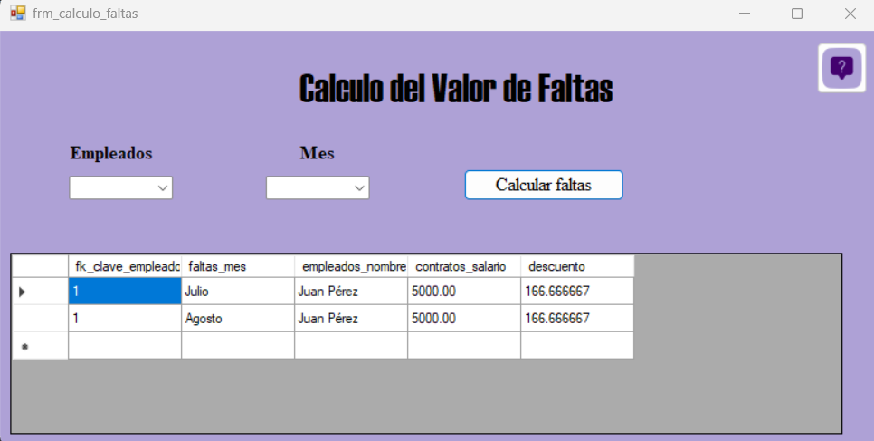
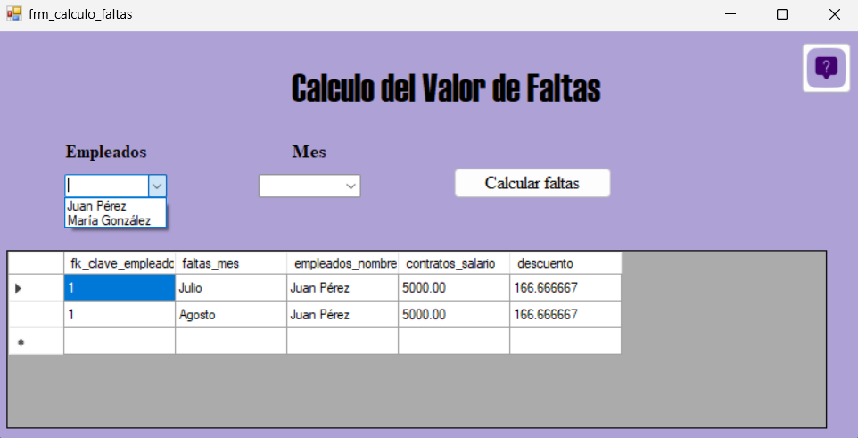
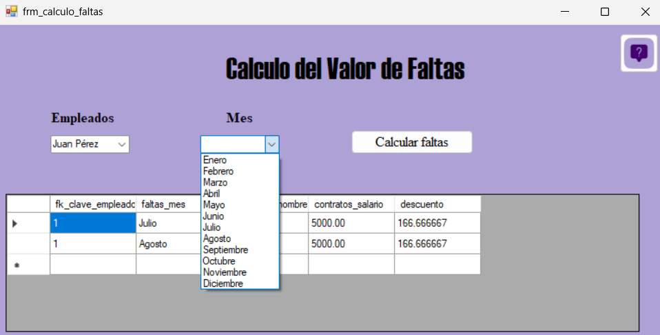
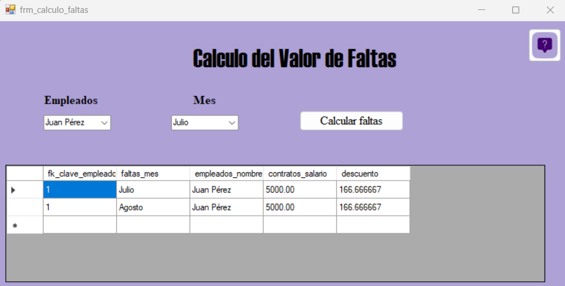
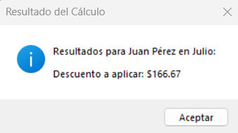

1. El formulario consta de un combo box con los empleados y otro con los meses
2. Primero seleccionamos el empleado
3. Segundo seleccionamos el mes
4. Por ultimo le damos clic al boton de calcular faltas
5. Se nos mostrara un mensaje con el calculo de las faltas del empleado y este se insertara en planilla, si desea consultarlo debe ir al apartado de planilla.
